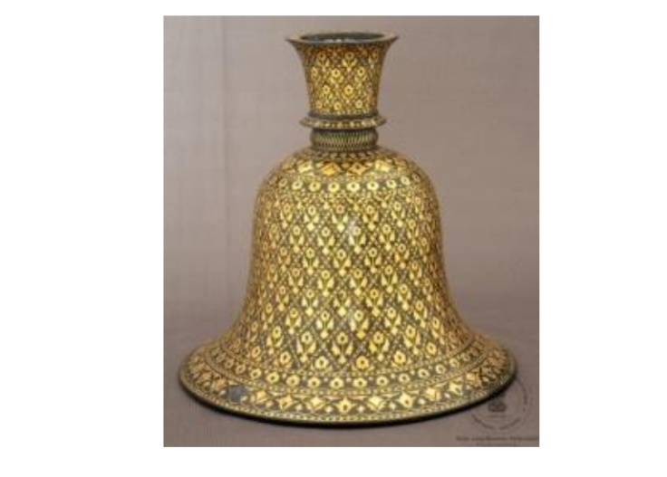

🔇 Is bhasha me is vastu ka audio abhi uplabdh nahi hai.
अभिग्रहण संख्या: XXXIII-265 हुक्के का निचला भाग

अभिग्रहण संख्या: XXXIII-265
यह घंटी के आकार का हुक्के का निचला भाग है। इसे ताँबे, सोने तथा जस्ता से बनाया गया है। इसके मुख्य भाग पर हीरे के आकार की पट्टियों में पुष्प-डंठल की आकृतियाँ बनी हैं। ऊपरी और निचले भाग के पास पुष्प और लताओं की सजावटी पट्टियाँ हैं। गर्दन वाले भाग पर भी इसी प्रकार की आकृतियाँ बनी हैं, जिनमें सोने की जड़ाई की गई है। यह कलाकृति भारत के कर्नाटक राज्य के बीदर की प्रसिद्ध बिदरी कला से संबंधित है। इसका निर्माण 19वीं शताब्दी ईस्वी का माना जाता है।
बिदरी कला का यह संग्रह विश्व में अपने प्रकार का सबसे बड़ा संग्रह है, जिसमें अनेक प्रकार की वस्तुएँ और विभिन्न आकार शामिल हैं। औपनिवेशिक शासन के दौरान अपने राज्य में इस कला के पतन को देखकर सालार जंग तृतीय ने इस कला को पुनर्जीवित करने और शिल्पकार समुदाय की सहायता के लिए विशेष प्रयास किए।
Acc No: XXXIII-265 Huqqa Bottom
Acc No: XXXIII-265
A bell-shaped Huqqa base crafted from zinc alloy with copper and gold components. The main body features floral stalk patterns within diamond-shaped panels, bounded by floral vine borders at the top and bottom. Similar motifs adorn the neck, with all designs intricately inlaid in gold. Originating from Bidar, Karnataka, India, it dates to the 19th century CE.
The museum's Bidri collection is the largest of its kind in the world, displaying a vast variety of shapes and objects. Recognizing the decline of traditional crafts during colonial rule, Salar Jung III made dedicated efforts to revive this art form and support the artisan community.
5. హుక్కా బాటమ్
Acc No: XXXIII-265
రాగి, బంగారు భాగాలు మరియు జింక్ పదార్థంతో తయారు చేసిన గంట ఆకారపు హుక్కా దిగువ భాగం. ఇది వజ్రాకారపు ప్యానెల్లు, పూల కొమ్మ నమూనాను కలిగి ఉంది, ప్రధాన పైభాగానికి మరియు దిగువన పూల తీగల పట్టీలు ఉన్నాయి. మెడ భాగంపై ఇలాంటి డిజైన్లు మరియు డిజైన్లను బంగారు పొదుగుతో అమర్చారు. ఈ వస్తువు యొక్క కళారూపం భారతదేశంలోని కర్ణాటకలోని బీదర్కు చెందినది. ఇది క్రీ శ 19వ శతాబ్దానికి చెందినదని చెప్పవచ్చు.
బిద్రీ సేకరణ ప్రపంచంలో ఈ రకమైన అతిపెద్దది మరియు వివిధ వస్తువులు మరియు ఆకారాల కలగలుపు ఉంది. వలసరాజ్యాల పాలనలో తన రాష్ట్రంలో హస్తకళల క్షీణత గురించి సలార్ జంగ్ III తెలుసుకుని, కళను పునరుద్ధరించడానికి మరియు చేతివృత్తుల సముదాయం సహాయపడటానికి అనేక ప్రయత్నాలు చేశారు.
బిద్రీ సేకరణ ప్రపంచంలో ఈ రకమైన అతిపెద్దది మరియు వివిధ వస్తువులు మరియు ఆకారాల కలగలుపు ఉంది. వలసరాజ్యాల పాలనలో తన రాష్ట్రంలో హస్తకళల క్షీణత గురించి సలార్ జంగ్ III తెలుసుకుని, కళను పునరుద్ధరించడానికి మరియు చేతివృత్తుల సముదాయం సహాయపడటానికి అనేక ప్రయత్నాలు చేశారు.
۵. حقے کا نچلا حصہ
اندراج نمبر: XXXIII-265
یہ گھنٹی نما حقے کا نچلا حصہ تانبے اور سونے کے اجزا سے تیار کیا گیا ہے، جبکہ اس میں زنک کا استعمال بھی کیا گیا ہے۔ اس کے بیرونی حصے کو ہیرے نما خانوں میں پھولوں کی شاخوں کے دلکش نقش سے آراستہ کیا گیا ہے۔ جسم کے اوپری اور نچلے حصوں پر پھولوں کی بیلوں کی خوب صورت پٹیاں بنائی گئی ہیں۔ گردن کے حصے پر بھی اسی طرز کے باریک نقش موجود ہیں، جنہیں سونے کی جڑائی سے نمایاں کیا گیا ہے۔ یہ خوب صورت فن بیدر، کرناٹک، ہندوستان کی مشہور بیدری فن کاری سے تعلق رکھتا ہے اور اس کا تعلق انیسویں صدی عیسوی سے ہے۔
بیدری فن کا مجموعہ دنیا میں اپنی نوعیت کا سب سے بڑا مجموعہ شمار ہوتا ہے، جس میں مختلف شکل اور انداز کی بے شماراشیا شامل ہیں۔ نواب سالار جنگ سوم نے نوآبادیاتی دور میں اپنی ریاست میں دست کاری کے زوال کو محسوس کیا اور اس عظیم فن کو دوبارہ زندہ کرنے اور ہنرمندوں کی برادری کی معاونت کے لیے نمایاں کوششیں کیں۔
بیدری فن کا مجموعہ دنیا میں اپنی نوعیت کا سب سے بڑا مجموعہ شمار ہوتا ہے، جس میں مختلف شکل اور انداز کی بے شماراشیا شامل ہیں۔ نواب سالار جنگ سوم نے نوآبادیاتی دور میں اپنی ریاست میں دست کاری کے زوال کو محسوس کیا اور اس عظیم فن کو دوبارہ زندہ کرنے اور ہنرمندوں کی برادری کی معاونت کے لیے نمایاں کوششیں کیں۔
অ্যাক্সেস নম্বর: XXXIII-265 হুঁকোর নিচের অংশ
अभिग्रहण संख्या: XXXIII-265
এটি তামা, সোনা ও দস্তা দিয়ে তৈরি ঘণ্টা-আকৃতির একটি হুঁকোর নিচের অংশ। এর গায়ে হীরকাকৃতি প্যানেলের মধ্যে ফুলের ডাঁটার নকশা এবং মূল অংশের ওপর ও নিচের দিকে লতাপাতার নকশার পট্টি রয়েছে। এর নলের অংশেও অনুরূপ নকশা দেখা যায় এবং এই নকশাগুলো 'গোল্ড ইনলে' পদ্ধতিতে ফুটিয়ে তোলা হয়েছে। এই শিল্পকর্মটি ভারতের কর্ণাটক রাজ্যের বিদার অঞ্চলের। এটি ঊনবিংশ শতাব্দীর নিদর্শন।
বিশ্বের মধ্যে 'বিদ্রি' শিল্পকর্মের সংগ্রহগুলোর মধ্যে এটিই বৃহত্তম এবং এতে বিভিন্ন ধরনের ও বিভিন্ন আকারের বস্তু রয়েছে। ঔপনিবেশিক শাসনামলে নিজ রাজ্যে এই শিল্পের ক্রমাবনতি লক্ষ্য করে সালার জং তৃতীয় এই শিল্পকে পুনরুজ্জীবিত করার এবং সংশ্লিষ্ট কারুশিল্পী সম্প্রদায়কে সহায়তা করার উদ্যোগ নিয়েছিলেন।
Acc No: XXXIII-265 હુક્કા બોટમ
अभिग्रहण संख्या: XXXIII-265
તાંબા અને સોનાના ઘટકો તથા ઝિંક (જસત) સામગ્રીમાંથી બનેલું ઘંટ આકારનું હુક્કા બોટમ. તેના શરીરના ઉપલા અને નીચલા ભાગમાં ફૂલની વેલના પટ્ટાઓ તથા હીરા આકારના પેનલોમાં ફૂલના ડાળીવાળા નમૂનાઓ છે. ગળાના ભાગ પર પણ સમાન આકૃતિઓ છે અને તમામ ડિઝાઇનો સોનાના જડતર કામ (ગોલ્ડ ઇનલે) દ્વારા તૈયાર કરવામાં આવી છે. આ વસ્તુની કલાકૃતિ બિદર, કર્ણાટક, ભારતની છે. તે ઈ.સ. ૧૯મી સદીની છે.
બિદરી સંગ્રહ વિશ્વમાં આ પ્રકારનો સૌથી મોટો સંગ્રહ છે અને તેમાં વિવિધ વસ્તુઓ તથા આકારોનો સમૂહ સામેલ છે. સાલાર જંગ ત્રીજાએ વસાહતી શાસન દરમિયાન પોતાના રાજ્યમાં હસ્તકલાના પતન વિશે જાણીને આ કલાને પુનર્જીવિત કરવા અને હસ્તકલા સમુદાયને મદદ કરવા માટે પ્રયાસો કર્યા હતા.
Acc No: XXXIII-265 ಹುಕ್ಕಾ ಬಾಟಮ್
अभिग्रहण संख्या: XXXIII-265
ತಾಮ್ರ ಮತ್ತು ಚಿನ್ನದ ಅಂಶಗಳು ಹಾಗೂ ಸತುವಿನ ವಸ್ತುವಿನಿಂದ ಮಾಡಲ್ಪಟ್ಟ ಗಂಟೆಯ ಆಕಾರದ ಹುಕ್ಕಾದ ತಳಭಾಗ ಇದಾಗಿದೆ. ಇದರ ದೇಹದ ಮೇಲ್ಭಾಗ ಮತ್ತು ಕೆಳಭಾಗದ ಬಳಿ ವಜ್ರಾಕಾರದ ಕಟ್ಟುಗಳಲ್ಲಿ ಹೂವಿನ ತೊಟ್ಟಿನ ವಿನ್ಯಾಸ ಹಾಗೂ ಹೂವಿನ ಬಳ್ಳಿಯ ಪಟ್ಟಿಗಳಿವೆ. ಕುತ್ತಿಗೆಯ ಭಾಗದಲ್ಲೂ ಇದೇ ರೀತಿಯ ವಿನ್ಯಾಸಗಳಿದ್ದು, ಈ ವಿನ್ಯಾಸಗಳನ್ನು ಚಿನ್ನದ ಜಡಿತದಿಂದ ಕೂಡಿಸಲಾಗಿದೆ. ಈ ವಸ್ತುವಿನ ಕಲಾಶೈಲಿಯು ಭಾರತದ ಕರ್ನಾಟಕದ ಬೀದರ್ಗೆ ಸೇರಿದ್ದಾಗಿದೆ. ಇದನ್ನು ಕ್ರಿ.ಶ. 19ನೇ ಶತಮಾನದ್ದೆಂದು ಅಂದಾಜಿಸಲಾಗಿದೆ.
ಬಿದ್ರಿ ಸಂಗ್ರಹವು ವಿಶ್ವದಲ್ಲೇ ತನ್ನ ರೀತಿಯ ಅತಿ ದೊಡ್ಡ ಸಂಗ್ರಹವಾಗಿದ್ದು, ಇಲ್ಲಿ ವಿವಿಧ ವಸ್ತುಗಳು ಮತ್ತು ಆಕಾರಗಳ ಸಮ್ಮಿಶ್ರಣವಿದೆ. IIIನೇ ಸಾಲಾರ್ ಜಂಗ್ ಅವರು ವಸಾಹತುಶಾಹಿ ಆಡಳಿತದ ಅವಧಿಯಲ್ಲಿ ತಮ್ಮ ರಾಜ್ಯದಲ್ಲಿ ಕರಕುಶಲತೆಗಳ ಅವನತಿಯನ್ನು ಅರಿತು, ಈ ಕಲೆಯನ್ನು ಪುನರುಜ್ಜೀವನಗೊಳಿಸಲು ಮತ್ತು ಕರಕುಶಲ ಸಮುದಾಯಕ್ಕೆ ನೆರವಾಗಲು ಪ್ರಯತ್ನಗಳನ್ನು ಮಾಡಿದರು.
୫. ହୁକ୍କା ବେସ୍
Acc No: XXXIII-265
ଏହା ତମ୍ବା ଏବଂ ସୁନା ତଥା ଜିଙ୍କ୍-ର ମିଶ୍ରଣରେ ତିଆରି ଏକ ଘଣ୍ଟାକୃତିର ହୁକ୍କା ବେସ୍। ଏହାର ଶରୀରରେ ହୀରା ଆକାରର ପ୍ୟାନେଲ୍ ମଧ୍ୟରେ ଫୁଲ ଡାଳର ଡିଜାଇନ୍ ରହିଛି ଏବଂ ଉପର ଓ ତଳ ଭାଗରେ ଫୁଲ ଲତାର ପଟି ରହିଛି। ଏହାର ବେକ ଅଂଶରେ ମଧ୍ୟ ସମାନ ଡିଜାଇନ୍ ଦେଖିବାକୁ ମିଳେ ଏବଂ ଏହି ସମସ୍ତ ଡିଜାଇନ୍ ସୁନାରେ ଖଚିତ କରାଯାଇଛି। ଏହି କଳାକୃତିଟି ଭାରତର କର୍ଣ୍ଣାଟକ ସ୍ଥିତ 'ବିଦର୍' ସହରର ଏବଂ ଏହା ଖ୍ରୀଷ୍ଟାବ୍ଦ୧୯ଶ ଶତାବ୍ଦୀର ଅଟେ।
ବିଶ୍ୱରେ ଏହି ପ୍ରକାରର ସବୁଠାରୁ ବୃହତ୍ତମ ସଂଗ୍ରହ ହେଉଛି ବିଦ୍ରି ସଂଗ୍ରହ, ଯେଉଁଥିରେ ବିଭିନ୍ନ ପ୍ରକାରର ଏବଂ ବିଭିନ୍ନ ଆକାରର ସାମଗ୍ରୀ ରହିଛି। ଔପନିବେଶିକ ଶାସନ ସମୟରେ ରାଜ୍ୟରେ ହସ୍ତଶିଳ୍ପର ଅବକ୍ଷୟ ହେଉଥିବା ଜାଣିପାରି ସାଲାର ଜଙ୍ଗ ତୃତୀୟ ଏହି କଳାର ପୁନର୍ଜୀବନ ଏବଂ ଶିଳ୍ପୀ ସମ୍ପ୍ରଦାୟକୁ ସହାୟତା କରିବା ପାଇଁ ଏହି ମାଧ୍ୟମରେ ପ୍ରୟାସ କରିଥିଲେ।
ବିଶ୍ୱରେ ଏହି ପ୍ରକାରର ସବୁଠାରୁ ବୃହତ୍ତମ ସଂଗ୍ରହ ହେଉଛି ବିଦ୍ରି ସଂଗ୍ରହ, ଯେଉଁଥିରେ ବିଭିନ୍ନ ପ୍ରକାରର ଏବଂ ବିଭିନ୍ନ ଆକାରର ସାମଗ୍ରୀ ରହିଛି। ଔପନିବେଶିକ ଶାସନ ସମୟରେ ରାଜ୍ୟରେ ହସ୍ତଶିଳ୍ପର ଅବକ୍ଷୟ ହେଉଥିବା ଜାଣିପାରି ସାଲାର ଜଙ୍ଗ ତୃତୀୟ ଏହି କଳାର ପୁନର୍ଜୀବନ ଏବଂ ଶିଳ୍ପୀ ସମ୍ପ୍ରଦାୟକୁ ସହାୟତା କରିବା ପାଇଁ ଏହି ମାଧ୍ୟମରେ ପ୍ରୟାସ କରିଥିଲେ।
५. हुक्का तळ
कार्यवाही क्र: XXXIII-265
तांबे, सोन्याचे घटक आणि जस्त या सामग्रीपासून बनवलेला घंटेच्या आकाराचा हुक्क्याचा तळ. यात डायमंड आकाराच्या चौकटींमध्ये फुलांच्या देठांची नक्षी असून, मुख्य भागाच्या वरच्या आणि खालच्या बाजूस फुलांच्या वेलींचे पट्टे आहेत. गळ्याच्या भागावरही अशीच नक्षी असून, ही नक्षी सोन्यात जडवलेली आहे. या वस्तूचा कलाप्रकार बिदर, कर्नाटक, भारत येथील आहे. हे इ.स. १९ व्या शतकातील आहे.
बिद्री संग्रह हा जगातील अशा प्रकारचा सर्वात मोठा संग्रह असून, यात विविध प्रकारच्या वस्तू आणि आकारांचा समावेश आहे. वसाहतिक राजवटीत आपल्या राज्यात हस्तकलांचा ऱ्हास होत असल्याची जाणीव सालार जंग तृतीय यांना झाली आणि त्यांनी या कलेचे पुनरुज्जीवन करण्यासाठी आणि हस्तकला समुदायाला मदत करण्यासाठी प्रयत्न केले.
बिद्री संग्रह हा जगातील अशा प्रकारचा सर्वात मोठा संग्रह असून, यात विविध प्रकारच्या वस्तू आणि आकारांचा समावेश आहे. वसाहतिक राजवटीत आपल्या राज्यात हस्तकलांचा ऱ्हास होत असल्याची जाणीव सालार जंग तृतीय यांना झाली आणि त्यांनी या कलेचे पुनरुज्जीवन करण्यासाठी आणि हस्तकला समुदायाला मदत करण्यासाठी प्रयत्न केले.
Acc No: XXXIII-265 ഹുക്കയുടെ അടിഭാഗം
Acc No: XXXIII-265
ചെമ്പ്, സ്വർണ്ണം എന്നിവയുടെ ഘടകങ്ങളും സിങ്കും ഉപയോഗിച്ച് നിർമ്മിച്ച മണിയുടെ ആകൃതിയിലുള്ള ഹുക്കയുടെ അടിഭാഗം. ഇതിന്റെ പ്രധാന ഭാഗത്ത് വജ്രാകൃതിയിലുള്ള പാനലുകളിൽ പൂങ്കുലകളുടെ പാറ്റേണും, മുകൾഭാഗത്തും താഴെയും പൂവള്ളികളുടെ ഡിസൈനുകളും നൽകിയിരിക്കുന്നു. കഴുത്തിന്റെ ഭാഗത്തും സമാനമായ ഡിസൈനുകളുണ്ട്; കൂടാതെ ഈ ഡിസൈനുകളെല്ലാം സ്വർണ്ണം പതിപ്പിച്ചതാണ്. ഈ വസ്തുവിന്റെ കലാസൃഷ്ടി ഇന്ത്യയിലെ കർണാടകയിലുള്ള ബിദാറിൽ നിന്നുള്ളതാണ്. ഇത് എ.ഡി 19-ാം നൂറ്റാണ്ടിലേതാണെന്ന് കരുതപ്പെടുന്നു.
ലോകത്തിലെ ഇത്തരത്തിലുള്ള ശേഖരങ്ങളിൽ വച്ച് ഏറ്റവും വലുതാണ് ഇവിടുത്തെ ബിദ്രി ശേഖരം; വ്യത്യസ്ത വസ്തുക്കളുടെയും ആകൃതികളുടെയും വലിയൊരു നിര തന്നെ ഇതിലുണ്ട്. കൊളോണിയൽ ഭരണകാലത്ത് തന്റെ സംസ്ഥാനത്തെ കരകൗശല വിദ്യകളുടെ തകർച്ചയെക്കുറിച്ച് ബോധവാനായ സാലാർ ജംഗ് മൂന്നാമൻ, ഈ കലയെ പുനരുജ്ജീവിപ്പിക്കാനും കരകൗശല സമൂഹത്തെ സഹായിക്കാനും ശ്രമങ്ങൾ നടത്തി.
5. ஹுக்காவின் அடிப்பகுதி
Acc No: XXXIII-265
மணி வடிவ ஹுக்காவின் அடிப்பகுதி செம்பு, தங்கம் மற்றும் துத்தநாகப் பொருட்களால் செய்யப்பட்டுள்ளது. இது வைர வடிவ பலகைகளில் பூவின் காம்பை ஒத்த மாதிரிகளையும், உடலின் மேல் மற்றும் கீழ் பகுதிக்கு அருகில் மலர்க்கொடிகளின் பட்டைகளையும் கொண்டுள்ளது. கழுத்துப் பகுதியிலும் இதே போன்ற வடிவமைப்புகள் உள்ளன, மேலும் இந்த வடிவமைப்புகள் தங்கம் கொண்டு பதிக்கப்பட்டுள்ளன. இந்தப் பொருளின் கலை வடிவம் இந்தியாவின் கர்நாடக மாநிலத்தில் உள்ள பீதரைச் சேர்ந்தது. இது பத்தொன்பதாம் நூற்றாண்டைச் சேர்ந்ததாகக் கணிக்கப்படுகிறது.
பீத்ரி பொருட்களின் சேகரிப்பு உலகிலேயே மிகப்பெரிய அளவிலான ஒன்றாகும், மேலும் இதில் பல்வேறு வகையான பொருட்களும் வடிவங்களும் உள்ளன. காலனித்துவ ஆட்சியின் போது தனது மாநிலத்தில் கைவினைப்பொருட்கள் நலிவடைவதைக் கண்ட மூன்றாம் சாலார் ஜங், இக்கலையை மீண்டும் உயிர்ப்பிக்கவும் கைவினைஞர்களின் சமூகத்திற்கு உதவவும் முயற்சிகளை மேற்கொண்டார்.
பீத்ரி பொருட்களின் சேகரிப்பு உலகிலேயே மிகப்பெரிய அளவிலான ஒன்றாகும், மேலும் இதில் பல்வேறு வகையான பொருட்களும் வடிவங்களும் உள்ளன. காலனித்துவ ஆட்சியின் போது தனது மாநிலத்தில் கைவினைப்பொருட்கள் நலிவடைவதைக் கண்ட மூன்றாம் சாலார் ஜங், இக்கலையை மீண்டும் உயிர்ப்பிக்கவும் கைவினைஞர்களின் சமூகத்திற்கு உதவவும் முயற்சிகளை மேற்கொண்டார்.